Practice Zone
Fun & Games
Two quick brain-warmers. Free, no sign-up, nothing saved — just play.


Word Scramble
Unscramble the word before you second-guess yourself.
— — —
Score: 0 Streak: 0
Quick Math Sprint
60 seconds. As many as you can.
60s
Press Start
Correct: 0 Best: 0